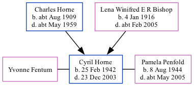

Cyril Francis Horne 1942 - 2003
[ Home ] | [ Calendar ] | [ Surnames Index ] | [ Family History ]The son of Charles Horne (a kitchen porter) and Lena Winifred E R Bishop, Cyril Horne, the second cousin on the father's side of <a href="I1.html">Nigel Horne</a>, was born in Ashford, Kent, England on Feb 25, 1942<span class="citation">1,2</span>. He was married twice - to Yvonne Fentum (<i>c.</i> May 1965 in Ashford) Pamela Penfold (<i>c.</i> Feb 1994 in Ashford)<span class="citation">3</span>.<p>He died on Dec 23, 2003 in Kent, England<span class="citation">2</span>.
Parents
- Charles Isaac was born c. Aug 1909
- Lena Winifred E R was born on Jan 4, 1916
Citations
- England & Wales births 1837-2006 - Findmypast
- England & Wales deaths 1837-2007 - Findmypast
- England & Wales Marriages 1837-2005 - Findmypast
Media
England & Wales births 1837-2006 - BMD/B/1942/1/AZ/000564/056
England & Wales deaths 1837-2007 - BMD/D/2004/1/86054530
England & Wales deaths 1837-2007 - BMD/D/2004/1/85521077
England & Wales marriages 1837-2008 - BMD/M/1994/2/89078642
England & Wales marriages 1837-2008 Transcription - BMD-M-1965-2-AZ-000448-001
Family Tree
Generated by Ged2Site. Last updated on Jul 20, 2025